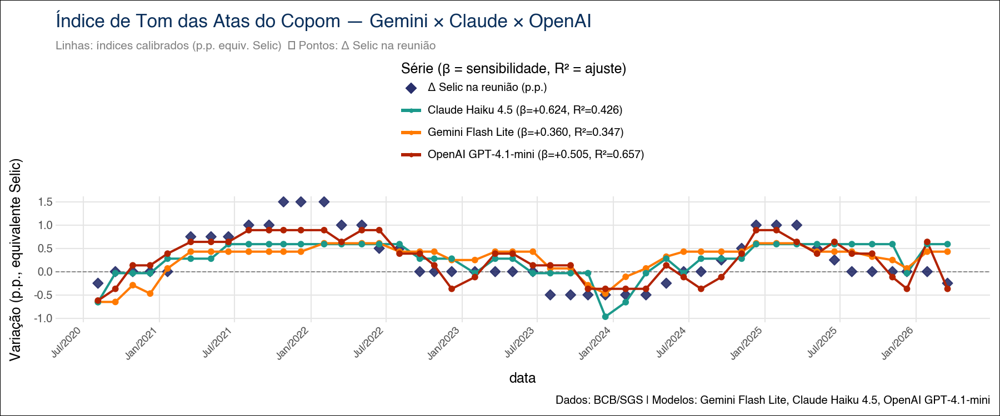
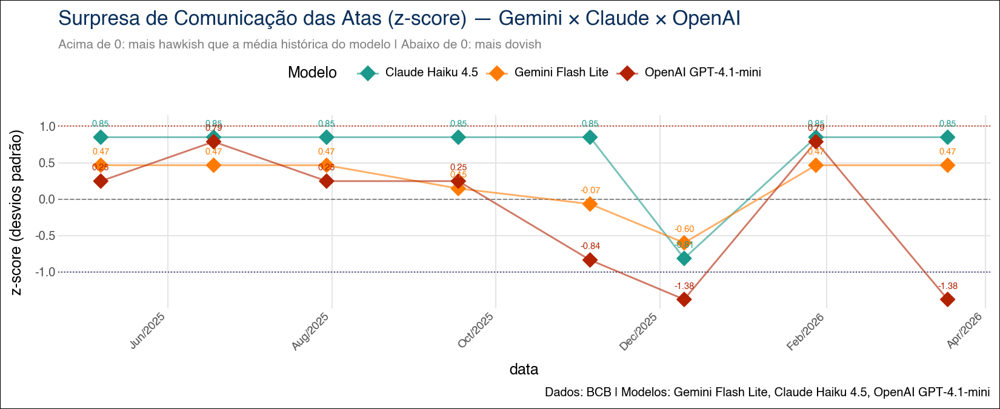

flowchart LR
subgraph Coleta
BCB[(API BCB<br>atas + SGS 432)]
BCB --> A[atas_cache.json]
BCB --> S[selic_cache.json]
end
subgraph Preparação
A --> P[Limpeza HTML<br>+ Seções A B]
end
subgraph Modelagem
P --> L1[LangChain<br>Gemini Flash Lite]
P --> L2[LangChain<br>Claude Haiku 4.5]
P --> L3[LangChain<br>GPT-4.1-mini]
L1 --> C1[scores_gemini_cache.csv]
L2 --> C2[scores_claude_cache.csv]
L3 --> C3[scores_openai_cache.csv]
end
subgraph Calibração e Validação
C1 --> OLS[statsmodels.OLS<br>ΔSelic = α + β·score + ε]
C2 --> OLS
C3 --> OLS
S --> OLS
OLS --> V1[In-sample<br>β̂, IC, R²]
OLS --> V2[Holdout<br>últimas 6 atas]
OLS --> V3[Walk-forward<br>n_pred=26]
end
V1 --> PDF([Quarto Render PDF])
V2 --> PDF
V3 --> PDFSentimento COPOM — Índice de Tom das Atas do Copom com Múltiplos LLMs
Python
Quarto
LLM
NLP
LangChain
Pydantic
Google Gemini
Anthropic Claude
OpenAI
statsmodels
Política Monetária
Banco Central
Macroeconomia
Pipeline reprodutível em Python que constrói um Índice de Tom hawkish/dovish das atas do Copom usando três LLMs em paralelo (Gemini Flash Lite, Claude Haiku 4.5 e GPT-4.1-mini), calibrado em pontos percentuais da Selic e validado em três camadas (in-sample, holdout e walk-forward).

Visão Geral
Este projeto implementa, seguindo a metodologia CRISP-DM (Cross-Industry Standard Process for Data Mining), um pipeline completo para construir um Índice de Tom hawkish-dovish das atas do Comitê de Política Monetária (Copom) do Banco Central do Brasil utilizando três modelos de linguagem de grande porte (LLMs) em paralelo:
- Gemini Flash Lite (Google)
- Claude Haiku 4.5 (Anthropic)
- GPT-4.1-mini (OpenAI)
O mesmo prompt é aplicado aos mesmos textos pelos três provedores via LangChain, com saída estruturada via Pydantic e cache local incremental que torna a publicação contínua do índice viável a custo marginal próximo de zero. Os scores brutos são calibrados em pontos percentuais equivalentes da Selic via regressão linear simples (statsmodels.OLS), e a robustez do exercício é testada em três camadas complementares: inferência in-sample, holdout das últimas reuniões e validação cruzada walk-forward sobre toda a amostra.
O artefato final é um paper técnico em Quarto + LaTeX versionado formalmente (CHANGELOG + snapshots por release), com duas edições paralelas — base auditável (com chunks visíveis) e edição do leitor (chunks ocultos).
TipTese central
Os três modelos concordam sobre a direção do tom — qual ata é mais hawkish (sinaliza juros mais altos) ou dovish (sinaliza juros mais baixos) — mas divergem sobre a intensidade com que essa direção se traduz em variação da Selic. A sensibilidade calibrada \(\hat{\beta}\) varia de \(+0{,}36\) a \(+0{,}62\) p.p. por unidade de score, uma diferença de mais de 70%.
Motivação
A comunicação dos bancos centrais é, em si, um instrumento de política monetária. As atas do Copom concentram, em escolhas sutis de linguagem, informação relevante sobre a direção futura da Selic. Quantificar esse “tom” — formalmente, mensurar o quão hawkish ou dovish uma ata é — permite:
- Construir séries quantitativas a partir de texto, alimentando modelos macroeconômicos (regras de Taylor, VARs, modelos de surpresa monetária);
- Detectar viradas de ciclo monetário antes que se traduzam em decisões formais de política;
- Comparar provedores de IA em uma tarefa econômica concreta, com critério de calibração objetivo (variação efetiva da Selic).
O projeto responde a três perguntas práticas:
- Os LLMs concordam entre si ao ler as atas do Copom?
- Os scores têm poder explicativo sobre a variação subsequente da Selic?
- A escolha do provedor altera materialmente o resultado quando o índice é usado como variável quantitativa?
Metodologia — CRISP-DM
O projeto foi estruturado seguindo o processo CRISP-DM (Cross-Industry Standard Process for Data Mining), adaptado ao contexto de NLP com IA generativa aplicada à comunicação de bancos centrais.
| Fase | Aplicação no Projeto |
|---|---|
| 1. Entendimento do Negócio | Mapeamento da literatura (Loughran & McDonald 2011, Apel & Grimaldi 2012, Hansen & Kazinnik 2023), definição da escala \(-3{,}0\) a \(+3{,}0\) com âncoras explícitas, escolha da variável-alvo (variação efetiva da Selic) |
| 2. Entendimento dos Dados | Inspeção das atas via API pública do BCB a partir da reunião 232 (ago/2020), análise estrutural das seções (A: diagnóstico; B: cenários e riscos; C: decisão) e da série SGS 432 (meta Selic) |
| 3. Preparação dos Dados | Scraping programático, limpeza de HTML, extração das seções A+B (~50% menos tokens), alinhamento temporal ata × decisão Selic, cache incremental local em três níveis |
| 4. Modelagem | Prompt unificado com âncoras hawkish/dovish; saída estruturada via Pydantic (TomAta.score: float); três LLMs em paralelo via LangChain; calibração OLS por modelo |
| 5. Avaliação | Três camadas: inferência in-sample (β̂, SE, t, p, IC 95%, R², R²_adj), holdout das últimas 6 reuniões (RMSE, MAE), validação walk-forward com janela expansiva (n_pred = 26) |
| 6. Implantação | Pipeline totalmente reprodutível em Quarto + Python; cache CSV por provedor permite reprocessamento incremental; sistema formal de releases (CHANGELOG + versions/); duas edições paralelas (base × público) |
Arquitetura do Pipeline
1. Entendimento do Negócio
1.1 Problema
Bancos centrais comunicam decisões de política monetária por meio de textos cuidadosamente redigidos — atas, comunicados, relatórios de inflação. A informação relevante para o mercado não está apenas na decisão final (subir, manter ou cortar a Selic), mas no tom com que o cenário é descrito. Quantificar esse tom é um problema clássico de NLP aplicado, com solução tradicional via dicionários (Loughran & McDonald, 2011) e, mais recentemente, via embeddings e LLMs (Hansen & Kazinnik, 2023).
1.2 Objetivos
- Construir um Índice de Tom hawkish-dovish das atas do Copom com escala interpretável (\(-3{,}0\) a \(+3{,}0\));
- Calibrar o índice em pontos percentuais equivalentes da Selic, tornando-o utilizável como input quantitativo;
- Comparar três provedores de LLM sob o mesmo prompt e validar cada calibração formalmente;
- Versionar todo o exercício de forma reprodutível, com sistema de releases que preserva snapshots auditáveis.
1.3 Critérios de sucesso
| Critério | Meta |
|---|---|
| Concordância direcional entre modelos | Correlação \(> 0{,}6\) entre scores brutos |
| Significância estatística | \(\hat{\beta}\) com \(p < 0{,}05\) no exercício in-sample |
| Poder preditivo out-of-sample | RMSE walk-forward melhor que baseline léxico |
| Custo operacional | < US$ 1 para reprocessar amostra completa |
| Reprodutibilidade | Pipeline roda do zero apagando os caches CSV |
2. Entendimento dos Dados
2.1 Fontes
| Fonte | API | Dados Coletados |
|---|---|---|
| Banco Central do Brasil | API de Atas do Copom | Texto integral das atas em HTML, a partir da reunião 232 (ago/2020) |
| Banco Central do Brasil | SGS — série 432 | Meta Selic definida pelo Copom (data e valor por reunião) |
2.2 Estrutura das atas
Cada ata segue um template canônico com três blocos:
| Seção | Conteúdo | Uso no projeto |
|---|---|---|
| A | Diagnóstico do cenário (atividade, inflação, externo) | Usada |
| B | Cenários e balanço de riscos | Usada |
| C+ | Anúncio formal da decisão (juros, direção, votos) | Descartada |
A seção C+ é descartada porque já anuncia a decisão conhecida — usá-la contaminaria o exercício com look-ahead bias. As seções A+B reduzem o consumo de tokens em cerca de 50% sem perder a informação prospectiva de tom.
2.3 Recorte amostral
Início em agosto de 2020 (reunião 232) — primeira ata pós-pandemia em que o Banco Central do Brasil adota o atual template estrutural. Recortes anteriores teriam textos de formato heterogêneo, comprometendo a comparabilidade.
3. Preparação dos Dados
3.1 Pipeline de coleta
Implementado em chunks Python diretamente no .qmd, com cache local em três níveis:
# 1) Atas via API do BCB
atas = baixar_atas_copom(reuniao_inicio=232) # → atas_cache.json
# 2) Selic via SGS 432
selic = baixar_selic_sgs(serie=432) # → selic_cache.json
# 3) Limpeza e extração de seções A+B
textos = [extrair_secoes_AB(html) for html in atas]O cache é incremental por reunião — só baixa do BCB o que ainda não está no JSON. Para reprocessar do zero, basta apagar o cache.
3.2 Cache incremental por LLM
Cada provedor mantém seu próprio CSV:
scores_gemini_cache.csv
scores_claude_cache.csv
scores_openai_cache.csvUma reunião só é re-inferida se o score não existir no CSV. Isso significa que rodar o .qmd após uma nova reunião do Copom envolve uma única chamada por provedor (custo total < US$ 0,01). Reprocessar tudo é uma decisão consciente: apaga-se o CSV e o pipeline regenera.
3.3 Decisões de preparação
| Decisão | Valor | Justificativa |
|---|---|---|
| Reunião inicial | 232 (ago/2020) | Template estrutural estável a partir desta reunião |
| Seções utilizadas | A + B | Diagnóstico e riscos — descarta decisão já conhecida |
| Variável-alvo | \(\Delta\)Selic (p.p.) | Variação na decisão da reunião subsequente |
| Cache | CSV por provedor | Permite reprocessamento seletivo por modelo |
4. Modelagem
4.1 Prompt unificado com âncoras explícitas
O mesmo prompt é enviado aos três provedores. Trecho-chave:
“Classifique o tom desta ata do Copom em uma escala contínua de \(-3{,}0\) (fortemente dovish, sinaliza corte agressivo de juros) a \(+3{,}0\) (fortemente hawkish, sinaliza alta agressiva), com âncoras: \(-2{,}0\) corte moderado; \(-1{,}0\) leve viés baixista; \(0{,}0\) neutro; \(+1{,}0\) leve viés altista; \(+2{,}0\) alta moderada. Retorne apenas o número.”
Saída estruturada via Pydantic:
class TomAta(BaseModel):
score: float = Field(ge=-3.0, le=3.0)LangChain força o output a satisfazer o schema — qualquer texto livre ou score fora da faixa é rejeitado e re-pedido.
4.2 Três LLMs em paralelo
| Provedor | Modelo | Cache nativo |
|---|---|---|
gemini-flash-lite-latest |
— | |
| Anthropic | claude-haiku-4-5 |
cache_control: ephemeral (prompt caching) |
| OpenAI | gpt-4.1-mini |
— |
O Claude usa o prompt caching nativo da Anthropic (bloco de instruções marcado com cache_control: ephemeral), o que reduz custo e latência a partir da segunda chamada quando atende ao mínimo de tokens.
4.3 Calibração OLS
Para cada modelo, ajusta-se uma regressão linear simples:
\[ \Delta\text{Selic}_t = \alpha + \beta \cdot \text{score}_t + \varepsilon_t \]
Cada modelo recebe seus próprios \(\hat{\alpha}\), \(\hat{\beta}\), \(R^2\). A calibração transforma o score bruto (em unidades de “tom”) em uma quantidade economicamente interpretável (pontos percentuais de variação esperada da Selic).
4.4 Baseline metodológico — léxico hawkish/dovish em PT-BR
Como contraponto às LLMs, implementou-se um dicionário hawkish/dovish em português adaptado ao Copom (espírito Loughran-McDonald). O score léxico é a frequência líquida de termos hawkish menos dovish. Serve como baseline não-LLM para os exercícios de validação.
5. Avaliação
A robustez do exercício é testada em três camadas complementares — uma escolha metodológica deliberada, dado o tamanho moderado da amostra (\(n = 46\) atas no estado atual).
5.1 Camada 1 — Inferência in-sample
statsmodels.OLS reporta, para cada um dos 4 modelos (3 LLMs + baseline léxico):
- \(\hat{\beta}\) e seu erro-padrão
- Estatística-\(t\), \(p\)-valor
- Intervalo de confiança 95%
- \(R^2\) e \(R^2_{\text{adj}}\)
5.2 Camada 2 — Holdout
Treino nas primeiras \(n - 6\) reuniões, teste nas últimas 6. Reporta RMSE e MAE out-of-sample.
5.3 Camada 3 — Walk-forward expanding window
Janela de treino mínima de 20 atas, predição da próxima, expansão da janela em uma observação, repete até esgotar a amostra. Resulta em \(n_{\text{pred}} = 26\) predições genuinamente out-of-sample. RMSE e MAE da walk-forward são as métricas mais conservadoras e respeitam a ordem temporal — nenhum dado futuro contamina o treino.
5.4 Achados centrais (estado em abr/2026)
| Modelo | \(R^2\) in-sample | \(\hat{\beta}\) | RMSE walk-forward |
|---|---|---|---|
| OpenAI GPT-4.1-mini | 0,66 | \(+0{,}50\) | 0,357 (líder) |
| Claude Haiku 4.5 | 0,43 | \(+0{,}62\) | ~0,67 |
| Gemini Flash Lite | 0,35 | \(+0{,}36\) | ~0,67 |
| Baseline léxico | (referência) | — | ~0,52 |
Interpretação:
- GPT-4.1-mini lidera in-sample e out-of-sample (RMSE walk-forward ~32% melhor que o baseline léxico).
- Claude tem maior sensibilidade in-sample mas overfit claro — RMSE quase dobra fora da amostra.
- Gemini é o mais conservador, comprime amplitude do score; empata com Claude na walk-forward.
- Baseline léxico vence o holdout (artefato de janela calma) mas volta ao último na walk-forward, confirmando que a vantagem das LLMs é genuína sobre o ciclo completo, não um artefato.
NoteHistórico relevante
A troca gpt-4o-mini → gpt-4.1-mini elevou \(R^2\) de ~0,11 para ~0,66 — geração de modelo importa de forma material para esta tarefa.
Surpresa de Comunicação (z-score)

Além do índice calibrado, o paper reporta a surpresa de comunicação — o score do modelo padronizado (z-score) usando a média e o desvio-padrão históricos. Picos relevantes de \(|z| > 1{,}5\) identificam atas em que o tom desvia fortemente do comportamento médio do Comitê, oferecendo uma medida natural de “evento de comunicação”.
Sistema de Versões
Uma escolha metodológica importante deste projeto é o sistema formal de releases, ausente em papers tradicionais mas natural em projetos reproduzíveis com infraestrutura de software.
Estrutura do paper — arquivos duplos
| Arquivo | Propósito | YAML |
|---|---|---|
sentimento_copom_IA_base.qmd |
Edição auditável (técnica) | echo: true |
sentimento_copom_IA_publico.qmd |
Edição do leitor | echo: false |
referencias.bib |
Bibliografia única | — |
Diferem em duas linhas: echo no YAML e o sufixo “Edição do leitor” na titlepage. Mudanças de prosa, tabelas, abstract e bibtex atualizam ambos os arquivos; mudanças de chunks de código vão apenas no base.qmd e o público herda automaticamente porque os chunks ficam invisíveis lá.
NotePor que dois arquivos físicos em vez de profile do Quarto
Profiles do Quarto seriam tecnicamente mais elegantes, mas dois arquivos com nomes auto-explicativos (_base.qmd × _publico.qmd) tornam o repositório mais legível para terceiros que chegam pelo GitHub.
CHANGELOG e snapshots
sentimento_copom/
├── CHANGELOG.md # formato Keep-a-Changelog
├── versions/
│ ├── v1.0_2026-04-26/ # snapshot da release v1.0
│ │ ├── sentimento_copom_IA_base.qmd
│ │ ├── sentimento_copom_IA_publico.qmd
│ │ ├── referencias.bib
│ │ └── CHANGELOG.md
│ └── v2.0_YYYY-MM-DD/ # próximas releases
└── _rollback/ # checkpoints ad-hoc de sessão
└── YYYY-MM-DD_T<HH>_<descritivo>/versions/ |
_rollback/ |
|
|---|---|---|
| Propósito | Releases formais | Checkpoints ad-hoc de sessão |
| Trigger | “marca como vX.Y” / fim de feature | “marca esse ponto como rollback” |
| Persistência | Permanente, vai para o repositório | Local, pode ser limpo |
| Naming | vX.Y_AAAA-MM-DD/ |
AAAA-MM-DD_TXX_descritivo/ |
Convenção de bumps
- Major (vX.0) — nova rodada metodológica completa (probit ordenado, ensemble, modelos maiores, nova validação).
- Minor (v1.X) — próximos passos atacados, novos achados empíricos, expansão da literatura.
- Patch (v1.0.X) — correções de prosa, ajustes editoriais.
Workflow de release
flowchart LR
A[Edição em<br>base.qmd] --> B{Tipo de<br>mudança?}
B -->|prosa, tabelas, YAML| C[Sincroniza para<br>publico.qmd]
B -->|código Python| D[Apenas base.qmd<br>público herda]
C --> E[Commit no Git]
D --> E
E --> F{Release?}
F -->|sim| G[Bump titlepage<br>+ CHANGELOG entry<br>+ snapshot em versions/]
F -->|não| H[Continua<br>na mesma versão]Estrutura do Projeto
Sentimento_COPOM/
│
├── sentimento_copom_IA_base.qmd # paper técnico (echo: true)
├── sentimento_copom_IA_publico.qmd # edição do leitor (echo: false)
├── referencias.bib # bibliografia compartilhada
│
├── atas_cache.json # cache de atas do BCB
├── selic_cache.json # cache da série SGS 432
├── scores_gemini_cache.csv # scores Gemini Flash Lite
├── scores_claude_cache.csv # scores Claude Haiku 4.5
├── scores_openai_cache.csv # scores GPT-4.1-mini
│
├── sentimento_copom_indice.png # gráfico do índice calibrado
├── sentimento_copom_zscore.png # gráfico do z-score
├── AM.png # logotipo na titlepage
│
├── CHANGELOG.md # histórico de releases
├── versions/ # snapshots por release
│ └── v1.0_2026-04-26/
├── _rollback/ # checkpoints de sessão
│
├── portfolio/ # template de divulgação
│ ├── sentimento-copom.qmd # ESTE arquivo (CRISP-DM)
│ ├── README.md # README do GitHub
│ └── *.png # imagens de capa
│
└── divulgacao/ # marketing e templates de releaseTecnologias
| Camada | Tecnologia |
|---|---|
| Renderização | Quarto + LaTeX (xelatex) |
| Pacotes LaTeX | booktabs, threeparttable (padrão JEL/AER) |
| Linguagem | Python 3.13 |
| Orquestração de LLMs | LangChain |
| Saída estruturada | Pydantic |
| Provedores de LLM | google-genai, anthropic, openai |
| Cache de prompt | cache_control: ephemeral (Anthropic) |
| Inferência estatística | statsmodels (OLS, IC, p-valores) |
| Visualização | plotnine |
| Coleta de dados | requests (API BCB) |
| Ambiente | python-dotenv |
Como Executar Localmente
Pré-requisitos
- Python 3.11+
- Quarto ≥ 1.4
- TeX Live (para renderização PDF)
- Chaves de API: Google AI Studio, Anthropic, OpenAI
Instalação
git clone https://github.com/vitorwilher/Sentimento_COPOM.git
cd Sentimento_COPOM
python3 -m venv .venv
source .venv/bin/activate
pip install -r requirements.txt
cp .env.example .env
# edite .env com suas chavesVariáveis de ambiente
GOOGLE_API_KEY=...
ANTHROPIC_API_KEY=...
OPENAI_API_KEY=...Renderização
# Edição auditável (com chunks)
quarto render sentimento_copom_IA_base.qmd
# Edição do leitor (sem chunks)
quarto render sentimento_copom_IA_publico.qmdReprocessamento total
# Apaga caches para forçar re-inferência completa
rm scores_*_cache.csv
quarto render sentimento_copom_IA_base.qmdPróximos Passos (v2.0)
- Capacidade antecedente \(t \to t+1\) — regressão preditiva da variação subsequente da Selic;
- Robustez a perturbações de prompt — variar redação, ordem das âncoras, idioma; medir variância entre execuções;
- Índice ensemble — média simples ou ponderada por \(R^2\) dos três scores calibrados;
- Inspeção qualitativa de divergências — atas em que os modelos discordam mais (linguisticamente ambíguas);
- Modelos maiores —
gpt-4.1,claude-sonnet-4-5,gemini-2.5-pro; - Probit ordenado — modelo de classificação de viés (alta / manutenção / corte) como alternativa ao OLS;
- Comunicados oficiais — estender o pipeline aos comunicados (mais curtos e mais frequentes);
- Surpresa de comunicação ortogonalizada — resíduo do tom controlando expectativas Focus.
Referências
- Apel, M.; Grimaldi, M. (2012). The Information Content of Central Bank Minutes. Riksbank Working Paper.
- Bholat, D.; Hansen, S.; Santos, P.; Schonhardt-Bailey, C. (2015). Text Mining for Central Banks. Bank of England.
- Blinder, A. S.; Ehrmann, M.; Fratzscher, M.; De Haan, J.; Jansen, D.-J. (2008). Central Bank Communication and Monetary Policy. Journal of Economic Literature, 46(4), 910–945.
- Caruso, A. (2026). Comunicação do Banco Central do Brasil e o Mercado Financeiro: Uma Análise Textual.
- Hansen, S.; Kazinnik, S. (2023). Can ChatGPT Decipher Fedspeak?. Working Paper.
- Hansen, S.; McMahon, M. (2016). Shocking Language: Understanding the Macroeconomic Effects of Central Bank Communication. Journal of International Economics, 99, S114–S133.
- Hansen, S.; McMahon, M.; Prat, A. (2018). Transparency and Deliberation Within the FOMC: A Computational Linguistics Approach. Quarterly Journal of Economics, 133(2), 801–870.
- Hubert, P.; Labondance, F. (2021). The Signaling Effects of Central Bank Tone. European Economic Review, 133.
- Loughran, T.; McDonald, B. (2011). When Is a Liability Not a Liability? Textual Analysis, Dictionaries, and 10-Ks. Journal of Finance, 66(1), 35–65.
- Picault, M.; Renault, T. (2017). Words Are Not All Created Equal: A New Measure of ECB Communication. Journal of International Money and Finance, 79.
- Wirth, R.; Hipp, J. (2000). CRISP-DM: Towards a Standard Process Model for Data Mining.
- Woodford, M. (2003). Interest and Prices: Foundations of a Theory of Monetary Policy. Princeton University Press.